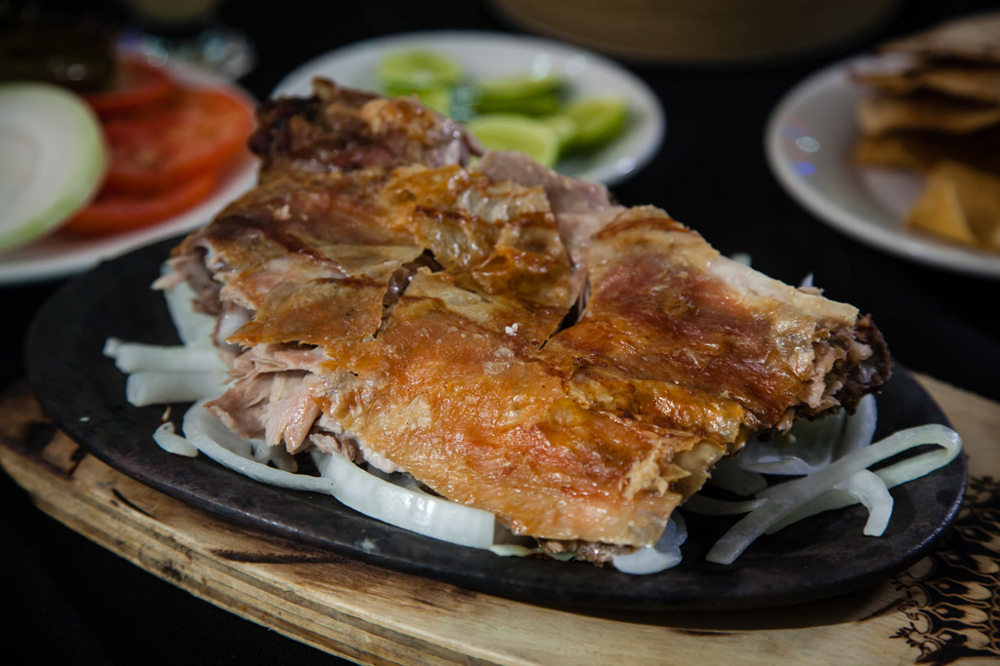

Ramen de cerdo
25 de Septiembre del 2018
Sin duda te comparto que este lugar tiene un sazón 100% japonés, utilizan productos de alta calidad y es muy rico.
El ramen de cerdo es exquisito y las cáscaras de cebolla que parecen tener vida al moverse en tu plato por el calor.
Te recomiendo el té de jazmín, y el helado de matcha.
Sin duda este restaurante es 100% japonés y ahora es de mis lugares favoritos sobre todo por los precios muy accesibles
Cabrito
14 de Julio del 2018
Tenia al menos mas de 5 años de no ir comer cabrito ahi y la verdad no ha cambiado nada y lo digo para bien.
El sabor, el sazón, el ambiente, la degustación, el ingrediente, el olor... todo como siempre perfecto.
Es de las cosas que puedo decir y presumir que solo en monterrey se come así... y mas en el Rey del Cabrito
 Angela:
Excelente reseña
Angela:
Excelente reseña